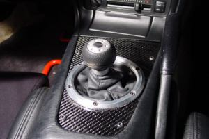
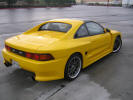
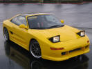
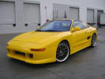
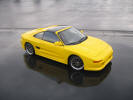
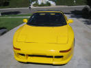
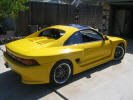
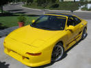
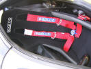
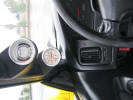

1993 TOYOTA MR2 TURBO
Part I: The Interview
Ktown213:
How about a quick intro?
Robert Kim: My name is Robert. I
drive a 1993 MR2 Turbo. I live in Fullerton, and I'm one of the founders of
our "car club" ToPi.
Kt213: How'd you get into the
import scene?
RK: Everybody in Fullerton has a
fixed up car. So that made me want to have the best looking, fastest car
in Fullerton. My car is about 10 years old and still pulls away from the
Type-S's you see on the road today.
Kt213: That's quite impressive.
Tell our viewers about your crew.
RK: The Club I'm in is called
ToPi (Tuning of Pure Imports). One of the other founders of the club, one
of my best friends Shawn Kim, drives an S2K.
Kt213: Any comments or
shout-outs?
RK: I would like to make a shout
out to everybody in the 714 area code, and especially to CluB ToPi. HALLA!
Thanks for the feature Ktown213!
Part II : The Specs |
Exterior: |
|
 |
All Photos taken by the owner









